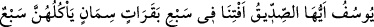

YÛSUF (A.S.)’IN
RÜYA TÂBİRİ
46. (Yûsuf’un yanına gelerek dedi ki:) Ey Yûsuf, ey doğru sözlü kişi! (Rüyada
görülen) yedi zayıf ineğin yediği yedi semiz inek ile yedi yeşil başak ve diğerleri de
kuru olan (başaklar) hakkında bize yorum yap. Ümid ederim ki, insanlara (isabetli
yorumunla) dönerim de belki onlar da doğruyu öğrenirler.
47. Yûsuf dedi ki: Yedi sene âdetiniz üzere ekin ekersiniz. Sonra da
yiyeceklerinizden az bir miktar hariç, biçtiklerinizi başağında (depo edip) bırakınız.
48. Sonra bunun ardından, saklayacaklarınızdan az bir miktar (tohumluk) hariç, o
yıllar için biriktirdiklerinizi yiyip bitirecek yedi kıtlık yılı gelecektir.
49. Sonra bunun ardından da bir yıl gelecek ki, o yılda insanlara (Allah
tarafından) yardım olunacak ve o yılda (meyve suyu ve yağ) sıkacaklar.
Yûsuf’un yanına gelerek dedi ki: “Ey Yûsuf! ey doğru sözlü kişi!” Sâkînin Yûsuf’u bu
şekilde tavsif etmesi, hem kendisinin hem de arkadaşının rüyalarını tâbir ederken onun
durumunu tecrübe etmiş, doğru söylediğini anlamış olmasından kaynaklanıyor.
Rüyada görülen “Yedi zayıf ineğin yediği yedi semiz inek ile yedi yeşil başak ve
diğerleri de kuru olan (başaklar) hakkında bize yorum yap.” Yani bize bu rüyayı tâbir
et. Çünkü bu rüyayı kral gördü. Rüyanın tâbirini isteyen bir kişi olduğu halde sâkînin
‘Bize yorum yap.’ demesi, bu rüyanın kendisiyle değil, halkın işlerine bakan, onlarla
ilgilenen diğer kişilerle ilgili olduğuna; kendisinin ise sadece bir elçi olduğuna işaret
etmektedir. Ayrıca sâkî çok isabetli bir şekilde kralın lafızlarını değiştirmeden olduğu
gibi aktarmıştır. Çünkü bazı rüyaların ne anlama geldiği ancak lafızlarından
çıkarılabilir.
“Ümid ederim ki insanlara” isabetli yorumunla, “dönerim de belki onlar da